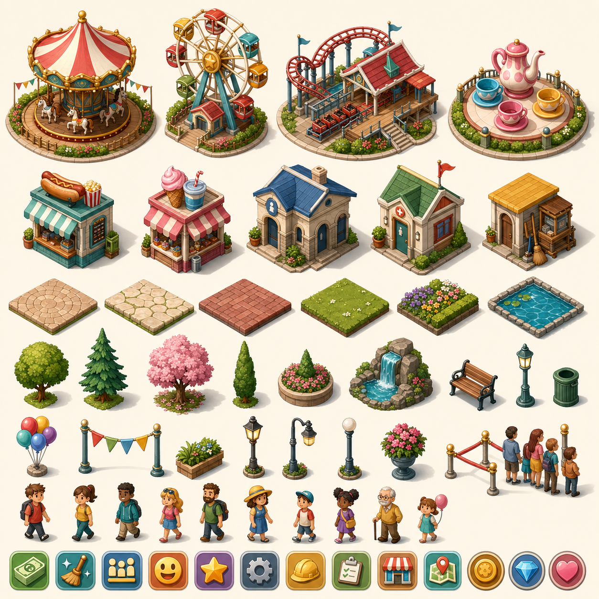

主人公
男性マネージャー
パーク管理
ウェルカム広場
ドラッグで移動、ホイールでズーム。タイルをクリックして建設します。ゲストはつながった通路を通ってライドへ向かいます。
経営目標ラウンド終了時に判定
ゲストの声
園内を観察中
新しい感想を待っています
成長
ライド稼働
景観
料金・運営収支
+$0
入園料高すぎると来園者が減少
$25
入園料$0
ライド$0
売店$0
維持費・人件費$0
売店在庫 0 / 0
配送待ちなし
需要観測中
成約率--
仕入差引$0
営業 1 / 1
店員 1人
平均評判 65
はじめて
序盤補助 50%
まずは既存設備のままゲストの動きを観察しましょう。
スタッフ・維持費
$0 / 精算
清掃員清潔さを維持
1
整備員ライドを整備
1
故障中 0
平均状態 100%
営業 0 / 0
平均人気 --
改良済み 0
清掃中 0
整備中 0
完了作業 0
休憩0
トイレ0
ごみ回収0
バス運行
路線準備中
車両数1台 $1,400
1
運行間隔短いほど待ち時間を軽減
7秒
待機 0人
乗車率 0%
累計 0人
停車順バス停を選択して編集
バス停がありません
モノレール評価4で解禁
駅 0 乗客 0人
園内列車評価5で解禁
駅 0 乗客 0人
アート方針

ROUND 1
経営レポート
★☆☆☆☆